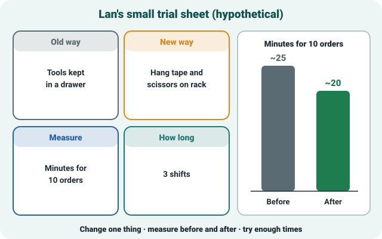

K4 · Creativity and improvement › Level 2 Starting
Try a small new way of working and record the result
A Level 2 (Starting) lesson. At Level 3, you will write a one-page improvement proposal: Propose a small improvement.
1. Objectives
- Fill in a small trial sheet: old way, new way, what to measure, how long to try.
- Write an improvement suggestion with the reason and the trial result.
2. Retrieval warm-up
- What are the four steps to get used to a new way of working?
- When you get feedback, what are the 3 steps for responding?
Answers
- Ask why; find what is different; try it on low-risk work; note where you get stuck.
- Listen fully, say thanks; ask about one point; fix it and carry on.
Review: Get used to new tools and processes.
3. Explanation
At Level 1, you practised sharing ideas. At Level 2, you practise testing an idea, on a very small scale. Only a test shows whether the idea helps.
A small trial stays within your own work. For example: changing how you arrange things on your own desk. Not changing the process for the whole shop. Anything that affects others, or involves safety or money, needs the person in charge's agreement first.
A small trial sheet has 4 boxes:
Small trial sheet
- Old wayHow you do it now. What the result is now.
- New wayChange exactly one thing. Write it specifically.
- What to measureOne number that is easy to count: minutes, mistakes, trips back and forth.
- How long to tryEnough times that it is not luck, such as 3 shifts or 1 week.
Why change only one thing? If you change many things at once, you do not know what made the difference. You met this idea in the K6 Level 1 lesson.
Why measure the old way too? Without a number for the old way, you cannot compare. "It seems faster" is not enough. "From 12 minutes down to 8" is clear.
Write your suggestion with the reason. After the trial, write 3 lines:
- What you tried, and for how long.
- The result: the numbers before and after.
- Your suggestion: keep it, drop it, or try again with a different change.
A poor result is also useful. You know that way does not help, and you save other people's time.
Learn tricks from colleagues. Many of the best ideas come from people with long experience. When you see someone work faster, ask: "How do you do that?" Then put that trick into your trial sheet.
4. Workplace example
Hypothetical scenario. Lan works part-time at the packing desk of an online shop selling phone accessories. She notices she wastes time looking for the tape and scissors.
Lan's trial sheet:
Old way: tape and scissors kept together in a drawer. Counted over 3 shifts: on average, 10 orders take about 25 minutes.
New way: hang the tape and scissors on a rack right in front of her. Learned from Rachel at the next desk.
What to measure: minutes for 10 orders.
How long to try: 3 shifts.
Result: on average about 20 minutes for 10 orders. Lan writes a suggestion to her manager: "I tried hanging the tools on a rack for 3 shifts. 10 orders went from about 25 minutes to about 20. I suggest racks for all 3 desks."
(The numbers are hypothetical, for illustration.)

Why this works: Lan changes one thing, measures before and after, tries it for 3 shifts, and writes a suggestion with numbers.
5. Practice
Hypothetical scenario. You are a student working part-time at the university library desk. Each time students ask about opening hours and how to borrow books, you explain it all again from the start.
Fill in a 4-box small trial sheet.
Hint 1
The new way could be a sheet of paper, a small sign, or a QR code. Choose only one.
Hint 2
What to measure: the number of times you explain in a shift, or the minutes spent explaining.
Model answer
Old way: explain out loud. Counted over 2 shifts: about 15 questions per shift.
New way: put a small sign at the desk with the opening hours and the 3 steps for borrowing. Ask the librarian's permission first.
What to measure: the number of times students ask these questions in a shift.
How long to try: 1 week.
6. Self-check
Choose an answer. Every option has an explanation.
Question 1. Which change is fine to try on a small scale without asking anyone?
-
Correct. Correct. It is within your own work and does not affect others.
-
Not quite. It involves money and customers, so ask the person in charge first.
-
Not quite. It involves safety. Never change it yourself.
Question 2. You change how you stack goods, your break time and your tools all at once. What is the problem?
-
Not quite. If you change many things at once, you cannot tell what made the difference.
-
Correct. Correct. Each trial should change only one thing.
-
Not quite. The main problem is not time. It is changing many things at once.
Question 3. What should you write in the "What to measure" box?
-
Not quite. Too vague. You cannot compare before and after.
-
Correct. Correct. One easy number that you can measure both before and after.
-
Not quite. Feelings are hard to measure. You need a specific number.
Question 4. You try a new way for 1 week but the result is no better. What should you do?
-
Not quite. A poor result is still useful to others.
-
Correct. Correct. Knowing what does not help also saves the team time.
-
Not quite. Reporting a false result leads others to make wrong decisions.
7. Reflection
- Which task you do every day could be measured with one easy number?
- Which colleague or friend does a task faster than you? What is their trick?
8. Real-world application
Over the next 7 days, fill in a small trial sheet for your own work. Measure the old way at least 3 times, then try the new way the same number of times. Write 3 lines with the result and your suggestion.
9. Metadata
| skill | K4 · Creativity and improvement |
|---|---|
| level | Level 2 · Starting |
| group | N2, N3 |
| framework_map | WEF: Creative thinking; CSfW: 3d Create and innovate; SkillsFuture CCS: Creative Thinking; EntreComp: Creativity; Learning through experience (reference only) |
| original | Vietnamese version |
| updated | 2026-11-14 |
Finish the lesson
Mark it as done and the site suggests reviews after 1, 3 and 7 days. The data stays on your device only.
Suggested reviews: